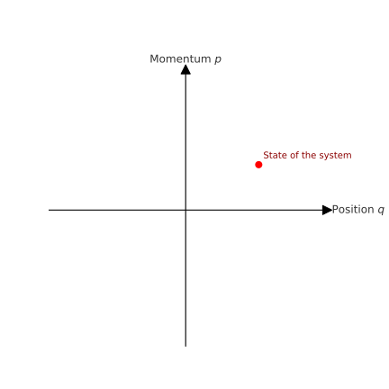

🔸 Formalism of Quantum Mechanics: Hilbert Spaces#
We begin by reviewing the formalism of quantum mechanics which is assumed to be known from previous courses. Althought most of the material should be known to everybody we will reformulate the theory in a more general and abstract mathematical framework. We begin by introducing the space of quantum states and discuss some difference between states of physical systems in classical and in quantum mechanics.
Classical states#
In classical physics, the state of a system—such as a point particle—is fully specified by its position and momentum. Mathematically, this corresponds to a point in a phase space. For a single classical point particle moving in three-dimensional space, the state is given by three position coordinates and three momentum components. Hence, the phase space of such a system is the set \(\mathbb{R}^6\).
More generally, for a system of \(N\) classical point particles, each with three position and three momentum degrees of freedom, the full classical state space (phase space) is \(\mathbb{R}^{6N}\). Each point in this \(6N\)-dimensional space corresponds to a complete specification of the instantaneous state of the system.
The term “set” in this context refers to the collection of all possible such states. For those familiar with classical mechanics, the classical phase space is a manifold equipped with a natural symplectic structure in Hamiltonian mechanics, which allows the formulation of equations of motion in terms of so-called Poisson brackets.
🖼️ Illustration: Classical Phase Space for One Particle in 1D#
For a single particle moving in one dimension, the state is given by its position \(q\) and momentum \(p\)). The phase space is \(\mathbb{R}^2\), and a point in this plane represents the complete classical state of the system.

Quantum States#
In quantum mechanics, the situation is fundamentally different from classical physics.
Experiments such as the double-slit experiment and the Stern–Gerlach experiment demonstrate that quantum systems can exist in superpositions of states. That is, if a system can be in state \(\psi_1\) and also in state \( \psi_2 \), then any linear combination of these two states is also a physically realizable state:
This principle of superposition has no classical counterpart.
In classical mechanics, adding two points in phase space yields a new point mathematically but it does not represent a physically meaningful state.
🔁 Linearity of Quantum Dynamics#
The time-dependent Schrödinger equation, which governs the evolution of quantum states, is linear:
This means:
If \( \psi_1(t)\) and \(\psi_2(t)\) are solutions, then so is any combination:
This property is a cornerstone of quantum theory and leads to many counterintuitive phenomena, such as interference, tunneling, and entanglement.
In the following, we introduce a precise mathematical framework of quantum mechanics that formalizes the above observations. The formalism is based on a mathematical structure named vector space. Vector spaces are quantum-mechanical counterpart of the classical phase space. Intuitively, since we ourselves are creatures living in 3D space we have much better picture of a classical phase space in our minds (even if for a single particle it is a six-dimensional space!). In this context, the vector spaces are for us much more abstract and less intuitive. After all we do not around ourselves cat’s that are simultaneously dead and alive. Nevertheless, we need to learn how to deal with such abstract structures in order to make predictions about real quantum systems.
We now formally state an axiom defining what a state space for quantum systems.
Axiom I (Quantum State Space):
The state of a quantum system is represented by a unit vector in a complex Hilbert space \(\mathcal{H}\).
Each physical (pure) state corresponds to a ray in \( \mathcal{H}\), i.e., a one-dimensional subspace spanned by a unit vector \( |\psi\rangle \in \mathcal{H} \).
This implies that two state vectors differing only by a global phase factor represent the same physical state. That is, \(|\psi\rangle\) and \(e^{i\theta}|\psi\rangle\), with \(\theta \in \mathbb{R}\), correspond to the same state.
📘 Mathematical Foundations: From Vector Spaces to Hilbert Spaces#
In order to understand the state axiom we review the mathematical foundation of of Hilbert spaces. In a nutshell, Hilbert spaces are specially structured vector spaces equipped with inner products and some additional properties related to convergence of infinite series of vectors. We start with the definition of a vector space:
🔹 Definition: Vector Space#
Let \(\mathbb{F}\) be a field (in quantum mechanics, typically \(\mathbb{C}\)). A vector space over \(\mathbb{F}\) is a set \(V\) together with:
A binary operation called vector addition:
A scalar multiplication operation:
such that the following axioms hold for all \(|\psi\rangle, |\phi\rangle, |\chi\rangle \in V\) and \(a, b \in \mathbb{F}\):
Commutativity of addition
Associativity of addition
Existence of zero vector: There exists a vector \(|0\rangle \in V\) such that
Existence of additive inverse: For each \(|\psi\rangle \in V\), there exists a vector \(-|\psi\rangle\) such that
Compatibility with scalar multiplication
Multiplicative identity:
Distributivity over vector addition
Distributivity over scalar addition
🔹 Motivation for the Inner Product#
By associating vector spaces to quantum states we still do not have any access to something that is measurable. Yes, we can combine states to get new states but how do we actually charaterize the state. In experiments, we characterize states by associating the numbers that represent the outcome of a measurement. So we need a mathematical structure to associate some numbers to the states of quantum systems!
In elementary quantum mechanics, we learned that the product of a wavefunction with its complex conjugate, \(\psi^*(x)\psi(x)\), corresponds physically to a probability density for the position of a particle. This is the contect of the so called Born rule for calculating quantum probabilities.
Now, the definition of a vector space (as given above) allows us to add vectors (states) and to scale them by complex numbers. However, this structure does not yet permit us to compute any kind of products of vectors and associate numbers to them. Thus we need to define some kind of product for quantum states in order to evaluate the quantities of interest, such as:
Probability amplitudes: \(\langle \phi | \psi \rangle\)
Expectation values of observables
Transition probabilities between quantum states
These operations require an additional structure: a way to pair vectors and obtain a scalar (a complex number) out of such a pair. This motivates the introduction of the inner product sometimes also called scalar product.
🔹 Definition: Inner Product#
Let \(V\) be a complex vector space. An inner product on \(V\) is a function
that assigns to each pair of vectors \((|\phi\rangle, |\psi\rangle)\) a complex number \(\langle \phi | \psi \rangle\), and satisfies the following axioms for all \(|\phi\rangle, |\psi\rangle, |\chi\rangle \in V\) and all scalars \(a \in \mathbb{C}\):
Hermiticity:
Linearity in the second argument:
Homogeneity in the second argument:
Positive-definiteness:
📝 Note: In mathematics, linearity is often taken in the first argument. In physics, however, it is conventional to define linearity in the second argument, as above.
A vector space equiped with a scalar produc ist in mathematics called unitary space. If we refer back to our first axiom we see that states correspond to unit vectors (vector of length 1!). So we need to define what a lenght (or norm) of a vector is. The following section provides a formal definition of the norm on vector spaces.
🔹 Definition: Norm#
Let \(V\) be a vector space over the field \(\mathbb{F}\) (typically \(\mathbb{C}\) in quantum mechanics). A norm on \(V\) is a function
that assigns to each vector a non-negative real number — interpreted as the length of the vector — and satisfies the following axioms for all \(|\psi\rangle, |\phi\rangle \in V\) and all scalars \(a \in \mathbb{F}\):
Positive-definiteness: $\( \| |\psi\rangle \| \geq 0, \quad \text{and} \quad \| |\psi\rangle \| = 0 \iff |\psi\rangle = |0\rangle \)$
Homogeneity (absolute scalability): $\( \| a |\psi\rangle \| = |a| \cdot \| |\psi\rangle \| \)$
Triangle inequality: $\( \| |\psi\rangle + |\phi\rangle \| \leq \| |\psi\rangle \| + \| |\phi\rangle \| \)$
🔹 Norm Induced by Inner Product#
If \(V\) is equipped with an inner product \(\langle \cdot | \cdot \rangle\), the norm is naturally induced by that same inner product:
The vector space equipped with an inner product is usually called unitary space and a vector space equipped with a norm is called normed space. We will now prove that any unitary space is automatically a normed space.
In order to prove that the scalar product induces the norm we now present our first theorem. The theorem introduces a famous inequality called Cauchy-Schwarz-Bunyakowsky inequality that plays a fundamental role both in mathematics as well as in many phyical applications.
🔸 Theorem: Cauchy–Schwarz–Bunyakowsky Inequality#
Let \(|\psi\rangle\) and \(|\phi\rangle\) be vectors in a complex inner product space (e.g. a Hilbert space). Then:
Equivalently, using the norm induced by the inner product:
🔹 Proof#
We define a (complex-valued) function of an scalar parameter \(\lambda \in \mathbb{C}\):
By the defining properties of the inner product this is certainly non-negative for all \(\lambda\).
We now expand \(f(\lambda)\) using the properties of the inner product:
To minimize this non-negative function, we choose for \(\lambda\):
Substituting this into \(f(\lambda)\) gives:
Since \(f(\lambda) \geq 0\) for all \(\lambda\), in particular it must be non-negative at this minimizing value of \(\lambda\):
Rearranging gives the desired inequality:
This completes the proof.
🧠 Physical Interpretation#
The inequality expresses the fact that the overlap between two quantum states cannot exceed the product of their norms.
Equality holds if and only if the vectors are linearly dependent: $\( |\psi\rangle = \alpha |\phi\rangle \quad \text{for some } \alpha \in \mathbb{C} \)$
In this case, the vector \(|\psi\rangle + \lambda |\phi\rangle\) becomes zero for a suitable \(\lambda\).
Now that we are equipped with the CSB inequality, we can prove that the scalar product indeed induces a norm!
🔸 Theorem: The Inner Product Induces a Norm#
Let \(V\) be a complex inner product space equipped with an inner product \(\langle \cdot | \cdot \rangle\). Define, for all \(|\psi\rangle \in V\),
Then this function \(\| \cdot \| : V \to \mathbb{R}_{\geq 0}\) defines a norm on \(V\).
🔹 Proof#
We must verify the three axioms of a norm:
(1) Positive-definiteness#
We show that:
\(\| |\psi\rangle \| \geq 0\) for all \(|\psi\rangle \in V\)
\(\| |\psi\rangle \| = 0\) if and only if \(|\psi\rangle = |0\rangle\)
Since \(\langle \psi | \psi \rangle\) is a real, non-negative number by the properties of the inner product, its square root exists and is non-negative:
Furthermore, \(\langle \psi | \psi \rangle = 0\) if and only if \(|\psi\rangle = |0\rangle\) by the positive-definiteness of the inner product.
✅ This proves positive-definiteness.
(2) Homogeneity#
We need to show that for all \(a \in \mathbb{C}\) and all \(|\psi\rangle \in V\):
Compute:
[ \begin{aligned} | a|\psi\rangle | &= \sqrt{ \langle a\psi | a\psi \rangle } \ &= \sqrt{ a^* a \langle \psi | \psi \rangle } \ &= \sqrt{ |a|^2 \cdot \langle \psi | \psi \rangle } \ &= |a| \cdot \sqrt{ \langle \psi | \psi \rangle } = |a| \cdot | |\psi\rangle | \end{aligned} ]
✅ Homogeneity is satisfied.
(3) Triangle inequality#
Finally, we need to show that for all \(|\psi\rangle, |\phi\rangle \in V\):
This is the point where we use the CSB inequality.
We expand the squared norm:
Using the property of complex numbers that:
and applying the Cauchy–Schwarz inequality:
we obtain:
Taking square roots:
✅ The triangle inequality is verified.
🔸 Corollary: Inner Product Spaces Are Normed Spaces#
Let \(V\) be a complex inner product space with inner product \(\langle \cdot | \cdot \rangle\).
Then the function
defines a norm on \(V\). Hence, every inner product space is also a normed vector space.
This means we can use all geometric notions associated with normed spaces — such as:
Lengths of vectors
Distance between vectors:
Limits and Cauchy sequences:
🔸 Definition: Hilbert Space#
Let \(V\) be a complex inner product space with inner product \(\langle \cdot | \cdot \rangle\) and the norm \(\| \cdot \| induced by the scalar product\).
We say that \(V\) is a Hilbert space if it is complete with respect to this norm i. e. every Cauchy sequence in \(V\) converges to a vector in \(V\):
🧠 Physical Significance#
In quantum mechanics:
The space of physical (pure) states is modeled by a Hilbert space.
Completeness ensures that infinite linear combinations (e.g. Fourier series or general wave packets that we create by infinite superpositions of states) converge to physical states.
Think of a quantum wavefunction built as an infinite sum of basis states (e.g., discrete energy eigenstates of some system such sa harmonic oscillator etc.):
We want this sum to converge to a state in our space. Completeness ensures that such sums (Cauchy sequences of partial sums) produce a valid, well-defined quantum state.
Without completeness, we might build a sequence of better and better approximations — but never actually reach a physical state!
🔍 Summary of Structure#
We now have the following hierarchy:
Structure |
Additional Data |
Properties Enforced |
|---|---|---|
Vector space |
Addition and scalar multiplication |
Linear algebra rules |
Inner product space |
Inner product $\langle \cdot |
\cdot \rangle$ |
Normed space |
Norm $| \cdot | = \sqrt{\langle \cdot |
\cdot \rangle}$ |
Hilbert space |
Completeness |
Infinite limits are well-defined within space |